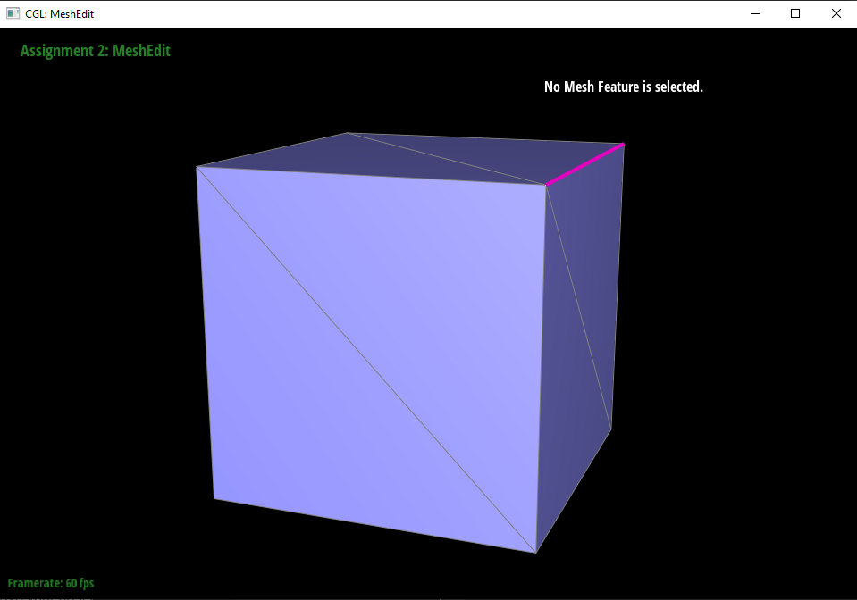

Task 1:
1.1: The De Casteljau Algorithm is a method for evaluating Bezier Curves, which is how we construct a curved line from a set of consecutive points (as opposed to just connecting adjacent points directly, which would just create a bunch of disjointed line segments). How the De Casteljau Algorithm does this to evaluate Bezier Curves is it first draws line segments between adjacent points. Then, it subdivides all of the line segments by putting a new point in between each of the original points, which effectively divides the line segment. Then, it connects the new points together by drawing line segments between the new points. This process is repeated recursively on each new set of points until there is only one point left. Note that the ratio of subdivision of the line segments needs to be the same throughout the recursive steps. If this is followed, eventually, only a single point is left and that is a point on the Bezier Curve. To construct the entire Bezier Curve, we do this for the entire range of subdivision ratios. I implemented the algorithm in code by using recursion to repeatedly linearly interpolate the adjacent points for a given subdivision ratio in a set of points until there is only one point left, in which case I know that is a point on the Bezier Curve. I know that my recursion will eventually reach the base case of a single point because every step of the algorithm will take B points and create B - 1 new points since there are only B - 1 line segments between B points (for our examples, in which the starting and end point don't connect). In my implementation, I use the parameter T, which ranges between 0 and 1, to define our ratio of subdivision.
1.2: Created a file in bzc/owncurve.bzc
1.3: Progression through each step/level screenshots
1.4: Different curve and t parameter screenshot
Task 2:
2.1: The De Casteljau Algorithm extends pretty naturally from Bezier curves to Bezier surfaces by using the Separable 1D de Casteljau Algorithm. Keeping it brief, this extension involves computing de Casteljau curves in one direction of the surface and then creating a "Moving" Bezier curve from the resulting control points. The "Moving" curve is then used in another de Casteljau calculation to evaluate the other direction, giving us a surface point. For example, if we are trying to find the surface position corresponding to (u, v), we would first use de Casteljau's to calculate various curves in the u-dimension. Then, we would do de Casteljau on the resulting "moving" curve to narrow down the point in the v-direction, giving us a surface point (u, v). I implemented this in code by looping through the U dimension and calculating control points using the de Casteljau Bezier Curve function I wrote in Task 1. Then, after calculating all of the control points, I did one last de Casteljau Bezier Curve function call on the control points in the v dimension. Note that my Windows desktop was suffering from the infinite rendering bug that was discussed extensively in the Piazza thread so I had to run VSCode in x64-Release instead of x64-Debug for this part and the rest of the project moving forward.
Task 3:
3.1: I implemented area-weighted vertex normals by looping through all of the half edges of the neighboring triangles and adding up the normals of each half edge before finally taking the unit vector of them. I referenced the spec-provided printNeighbourPositions function in order to help me figure out how I would traverse all the half-edges of the neighbours. Thankfully, there were also provided normal() and unit() functions so I didn't have to calculate those by hand. The reason I didn't need to explicitly calculate area was because in Face::normal(), we took the cross product of pi and pj, and the magnitude of the cross product between two vectors represents the area of the parallelogram between the two vectors. As such, the area weighting is already implicitly taken into account when we call normal(). We just need to use unit() at the end to make sure that we end up with a unit normal. I also implemented a check to not add the normal if the edge is a boundary, because doing so would cause errors in certain scenes.
3.2: Without Phong shading
3.2: With Phong shading
Task 4:
4.1: I implemented flipEdge by first saving a reference to all of the triangle elements (half edges, faces, vertices, full edges), and then reassigning the attributes of these elements based on how the attributes are supposed to be after the flip. What was really helpful in implementing this was to physically draw out all of the elements before and after the flip. From there, it was pretty easy to navigate the image and access elements and assign the attributes of elements based on the picture I drew. I've included the images I drew below:
4.1 (Before flip reference drawing):
4.1 (After flip reference drawing):
4.2 Before Flip:
4.2 After Flip:
4.3: Thankfully, my debugging experience for this part wasn't that bad but I did misassign a few pointers and I had to really go back and meticulously double/triple check everything to make sure it was correct based on the reference images I drew.
Task 5:
5.1: I implemented almost exactly the same way I implemented splitEdge, except that there were more elements and I had to create new elements. I saved a reference to all of the existing triangle elements (half edges, faces, vertices, full edges) and created all of the new elements I would need. Then I assigned the attributes of all the elements based on what they are supposed to be after the split. I used the same implementation trick in this task, which was to draw a before and after picture, so that it was relatively easy to just follow the picture when I actually coded the function. I've included the images I drew below:
5.1 (Before flip reference drawing):
5.1 (After flip reference drawing):

5.2 Before Split:
5.2 After Split:
5.3 Before Splits and Flips:
5.3 After Splits and Flips:
5.4: Like with Task4, thankfully, my debugging experience for this part wasn't that bad but I did misassign a few pointers and I had to really go back and meticulously double/triple check everything to make sure it was correct based on the reference images I drew.
Task 6:
6.1: I implemented loop subdivision by following the recommendation that the spec had which was to calculate the new positions before actually doing any splitting or flipping. I found that the classes provided in the skeleton code were also already premade to support this way of solving the problem, as the Vertex and Edge classes came with newPosition attributes that could temporarily save a future position while still being able to work with the original position. Grossly simplifying everything I did, I first calculated the new positions, then split and flipped, then resolved the vertex positions. Of course, I also took into account which vertices and edges were new and set their isNew flags accordingly so that the flip portion of my function was fine. I also updated my Task 5 method with more isNew attribute setting to support the loop subdivision. One implementation/debugging trick I used was suggested in Piazza, and it was to comment out the moving of the positions of the vertices just to make sure splitting and flipping was working well first. This helped me find my errors easier, as I had an intermediary point to test if half of my code was correct first before I readded the positional changes of the vertices. I would also like to note that this is the first CS project that has completely crashed my computer. This happened because I looped from edgesBegin() to edgesEnd() when splitting my edges, but turns out every time I split edges, new edges are created so we never get to edgesEnd() and it splits edges to infinity.
6.2: After loop subdivision, it seems like sharp corners and edges are "softened" in that they end up more round and less sharp than before. I've included screenshots below to showcase this with the beetle.dae. You can see it most on the left side with the corner of the car being softened as if it was sanded away. You can also see the effect somewhat along the edges of the window.
6.2 Before Loop Subdivision:
6.2 After Loop Subdivision:
6.2 (cont.): I can reduce this effect by pre-splitting the edges around the sharp corners and edges. I believe this is because when I presplit, the granularity (the number of triangles around the area) goes up, so the impact of the loop subdivision is less drastic. I've included images below:
6.2 Pre-splitting corners/edges, before loop subdivision:
6.2 Pre-splitting corners/edges, after loop subdivision:
6.3: The loop subdivision causes the cube to become slightly asymmetric after repeated subdivisions because the triangles are not equilateral triangles, so their split will not be equivalent in all directions. As such, when calculating the loop subdivision, the triangle is biased to one side so the weighting of the subdivided shape will also be biased to one side. I've included images below to document this behavior:
6.3 (cont.): I can pre-process the cube by first splitting the triangles to alleviate this effect. How this works is that with higher granularity (more triangles in the square), the loop subdivision has less of a pull on the subdivided shape, so it will pull the corners of the square in less. Also, even though the triangles are still not equilateral, there is one on each side, and as such, the bias will pull in all 4 sides of the square of the cube the same amount, so now there is no asymmetry. I've included images below: